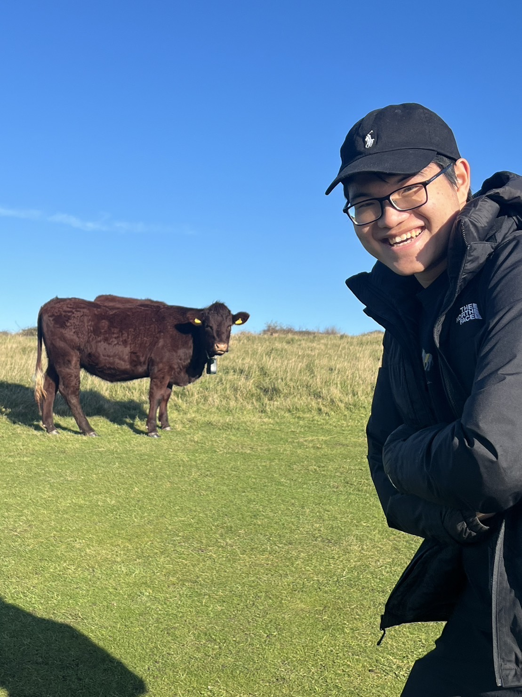

Hello! I’m Pol Tawin Choksitthikasam, FinTech graduate student at Imperial, with a BSc in Computer Science from Sussex. This page is a balanced mix of my CV and a glimpse into my personal interests, designed to help you get to know me a little better. I am interested in data-driven finance, blockchain applications, experimenting with cultivating wasabi in my backyard, and I spent the play-to-earn boom running a Thai-language YouTube channel explaining the Axie Infinity economy. Based in London, returning to Thailand.
tawin.phol@gmail.com
Imperial College London
8/2025 - Present
Key Modules include:
University of Sussex
9/2022 - 5/2025
Key Modules include:
University of Edinburgh
9/2020 - 5/2022
Key Modules include:
International Baccalaureate
8/2013 - 12/2015 & 8/2016 - 6/2020
Subjects include:
RungWattana Logistics6/2023 - 7/2023
Data Analyst Intern
De Roma Fragrance & Chemicals 6/2022 - 8/2022
ERP Implementation Team Intern
Data Café 6/2021 - 8/2021
Analyst Intern
Egg Digital 6/2019 - 8/2019
Backend Engineering Intern
BSc dissertation, University of Sussex. A browser-based tutor that teaches syllogistic inference through interactive Category Pattern Diagrams, with a companion React dashboard for tracking learner progress. Written up as a research report and hosted here.
MSc FinTech applied project, Imperial College Business School. A Solidity framework that replaces token-weighted ("plutocratic") DAO governance with identity-aware alternatives, implementing and benchmarking quadratic voting and conviction voting against a standard OpenZeppelin Governor baseline using the same Sybil-resistance primitive.
Built during my internship at De Roma Fragrance & Chemicals. A Django system that pulls live data from SAP Business One over MS SQL Server and automates the compliance documentation that was previously assembled by hand across sales, lab and production — covering batch-level tracking for compound products and Bill of Materials calculations.
Algorithmic trading competition run by IMC. Wrote and backtested a tick-by-tick trading agent across five rounds: AR(4) market-making, Black–Scholes options market-making on the VEV series, and directional trend-following across 14 products. Finished in the top 5.3% of 18,803 teams with 218,457 in total PnL.
Student Ambassador — Imperial College Business School, 9/2025 - 6/2026
Represent the Business School at recruitment events and information sessions, mentor applicants through Unibuddy, and contribute to promotional and social media campaigns.
Treasurer (formerly Event Coordinator) — Sussex Thai Society, 9/2022 - 6/2025
Managed a £2,000 annual budget of sponsorships and ticket sales, and organised monthly Thai cultural events for students across Brighton universities.
Home-based farming systems — 2019 - Present
Designed and built a working hydroponic system for garden herbs, and an aquaponic system for salad greens (2020 - 2022). Currently trying to cultivate wasabi — the build log.
Madfish001 — Thai-language YouTube channel, 2021 - 2022
Explained the Axie Infinity play-to-earn economy to Thai newcomers during the boom — fiat on-ramps, marketplace mechanics and token transfers — reaching roughly 99,000 views across the 15 most recent uploads, and wrote a bulk listing tool for the marketplace. More about the channel.
University-level table tennis — 2022 - 2024